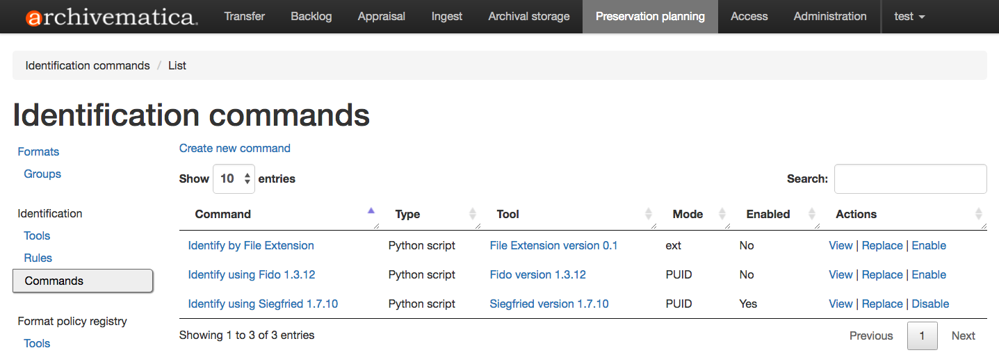
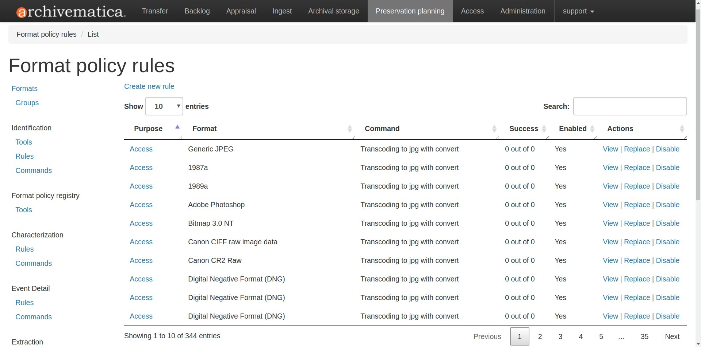
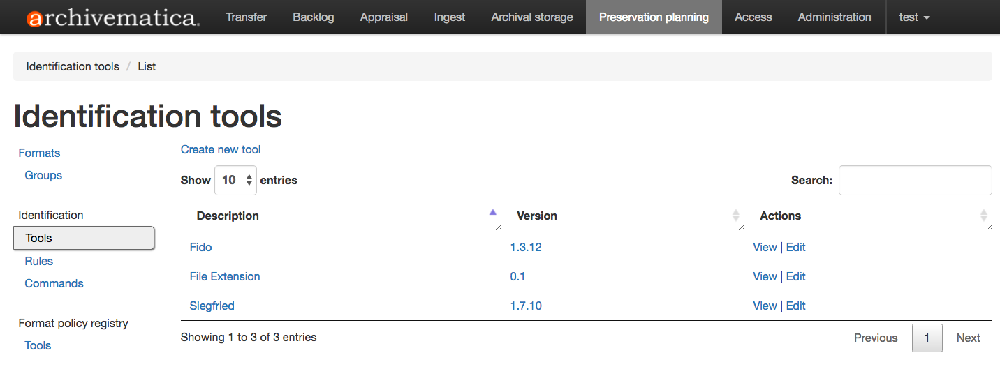

保存計画¶
フォーマットポリシーレジストリ（FPR）は、Archivematicaユーザが特定のファイルフォーマットに対してArchivematicaが行うべきアクションを定義するためのデータベースです。例えば、Archivematica が JPEG ファイルを長期保存するためにどのように正規化するかを指定します。これはフォーマットポリシーと呼ばれ、Archivematica が目的の保存アクションを実行するために使用するツール、ルール、コマンドを定義します。
正規化、パッケージ抽出、特性化、妥当性確認、識別、確認、テキスト変換などの保存アクションは、Archivematica の保存計画タブで管理されます。
When you install Archivematica, default formats, rules and commands are installed and accessed through the Preservation Planning tab. When you upgrade to a new release of Archivematica, new formats, rules and commands may be added (check the release notes for the specific release to find out). In addition, you can maintain local rules to add new formats or customize the behaviour of Archivematica. Your local changes are maintained if you upgrade your Archivematica pipeline to a new version. Archivematica's default format policies are maintained by Artefactual. Format policies will change as community standards, practices and tools evolve. If you would like to suggest a different default format policy, consider opening an issue in the Archivematica issues repo.
このページでは：
保存計画ポリシー¶
標準やツールの進化に合わせて、時間の経過とともにフォーマットの正規化ルールを知らせるために、デジタル保存環境の監視を含む地域のポリシーや慣行を確立することが機関にとって重要です。
信頼されるデジタルリポジトリを監査するためのTRAC規格（ ISO 16363：2012 ）に従って、ポリシーとプラクティスを文書化することをお勧めします。
定義¶
フォーマット¶
フォーマットとは、デジタルストレージメディアに保存するために情報をエンコードする標準化された方法です。Archivematica は、英国国立公文書館が管理するファイルフォーマットの技術レジストリである PRONOM からフォーマット情報を抽出することにより、数百のファイルフォーマットを認識します。
[保存計画] タブの左側のサイドバーの上部にある フォーマット を選択すると、フォーマット表示ページが表示され、Archivematica が現在認識しているすべてのフォーマットのリストが表示されます。このテーブルの各エントリは、1 つ以上の関連フォーマット バージョンを表すレコードです。各フォーマットのバージョンも記録となります。たとえば、 Graphics Interchange Format のフォーマットレコードは、GIF フォーマットのさまざまなバージョン (GIF 1987a、1989a、および Generic gif) のフォーマットバージョンレコードで構成されています。
Formatsビューページで Create new format を選択すれば、いつでもFPRに新しいフォーマットを追加できます。新しい書式はPRONOMに存在する必要はないことに注意してください。極めて稀な書式や一度しか使わない書式を扱う場合は、ここで完全にローカルな書式レコードを作成できます。
フィールド：
グループ ：以下のフォーマットグループを参照してください。
説明 ：フォーマットの名前。
フォーマットを作成したら、フォーマットのバージョンを追加して、フォーマットのより詳細な情報を記録できます。
フィールド：
説明 ：フォーマットバージョンの名前。このテキストは、METSファイルのフォーマットタイプを指定するために使用されます。このフィールドは必須です。
バージョン ：この特定のフォーマットのバージョンのバージョン番号。たとえば、Adobe Illustrator 14 ファイルの場合は、 14 と入力します。このフィールドは必須です。
Pronom id ：存在すれば、PRONOMにおける特定のフォーマットのバージョンの一意識別子。このフィールドはオプションです。
アクセスフォーマット ：このボックスにチェックを入れると、このフォーマットのバージョンがエンドユーザーにとって許容できるアクセスフォーマットであることを示します。このフィールドはオプションです。
保存フォーマット ：このボックスにチェックを入れると、このフォーマットのバージョンが長期保存に適した保存フォーマットであることを示します。このフィールドはオプションです。
フォーマットグループ¶
フォーマットグループは、共通のプロパティを共有する関連ファイルフォーマットの便利なグループ化です。たとえば、FPR には"Image （raster）" グループがあり、GIF、JPEG、PNG のフォーマットレコードが含まれています。各フォーマットは1つのフォーマットグループに属します。
[保存計画] タブの左側のサイドバーの上部近くにある グループ を選択すると、[フォーマットグループ] 表示ページが表示されます。ここには、Archivematica がフォーマットを分類するために使用するフォーマットグループのリストが表示されます。フォーマット名をクリックすると、そのグループに属するすべてのフォーマットが表示されます。
以下のフォーマットグループは、FPRにあらかじめ入力されています：
オーディオ
バイナリ（データ）
バイナリ（実行可能）
CAD
データの可視化
データベース
データセット
デスクトップパブリッシング
ディスクイメージ
電子メール
フラッシュ
フォント
地理情報システム
画像（ラスター）
画像（ベクター）
パッケージ
ポータブル文書フォーマット
プレゼンテーション
スプレッドシート
統計
テキスト（マークアップ）
テキスト（プレーン）
テキスト（ソースコード）
テキスト（構造化）
不明
動画
ワープロ
フォーマットグループは、新しいデータがPRONOMからArchivematicaにインポートされるたびに手動で割り当てられます。フォーマットが誤って分類されていると思われる場合は、フォーマットを編集することで変更できます。その変更が他のユーザーにも関係すると思われる場合は、 Archivematica issues repo にissueを開くことを検討してください。
目的¶
「目的」 とは、特定のツール、ルール、またはコマンドが Archivematica ワークフロー内で果たす機能を指します。これは、ツール、ルール、またはコマンドがデプロイされるコンテキストによって異なります。たとえば、変換ツールを使用して JPG ファイルを TIFF に正規化するルールには、 保存 という目的がある場合があります。これは、このルールの目的が長期保存用の TIFF を作成することであることを意味します。
「目的」という用語は、[保存計画] タブ内のさまざまな場所で使用されます。場合によっては、 コマンドの使用法 などの同様の用語が代わりに使用されます。
ツール¶
Archivematica は、保存処理に使用される多くのオープンソースツールのラッパーとして機能します。これらのツールには、 FITS のようなデジタル保存に特化したツールや、 Inkscape のような異なるファイルフォーマットを扱うツールなどがあります。
左側のサイドバーで、 ポリシー レジストリのフォーマット 見出しの下にある ツール を選択すると、ツールの完全なリストにアクセスできます。
ツールはコマンドによって呼び出され、フォーマットに基づいて動作します。
コマンド¶
フォーマットポリシーコマンドは、ツールの実行方法を制御するスクリプトまたはコマンドラインステートメントです。コマンドは、ファイルの識別などの特定の目的のために作成されます。たとえば、 転送 中に、Archivematica にファイルのフォーマットを識別するように指示できます。これは、Archivematica にファイル識別コマンドを実行するように指示します。デフォルトの Archivematica インスタンスでは、これは " Siegfried を使用して識別する" となり、転送に含まれるファイル識別ツール Siegfried を実行します。このコマンドは、転送中のファイルごとに 1 回実行されます。
特定の目的に対する現在のコマンドを見るには、左側のサイドバーでその目的を見つけ（すなわち、 識別 ）、サブメニュー項目 コマンド を選択します。
{kind=link}

Archivematica には、様々なツールのデフォルトコマンドが含まれています。これらのコマンドは、いつでも無効にしたり、置き換えたりできます。
ルール¶
フォーマット ポリシー ルールは、コマンドをファイル フォーマットに関連付けます。コマンドと同様に、ルールもファイルの正規化など特定の目的のために作成されます。例えば、保存のためにファイルを正規化する場合、Archivematica に、すべての JPG ファイルに対して Transcoding to jpg with convert というコマンドを使うように指示できます。一方、SVG ファイルは、 Transcoding to pdf with inkscape というコマンドを使って PDF に変換されます。このように、ツール、ルール、コマンドはすべて、保存ポリシーを実行するために連携します。
特定の目的に対する現在のルールを見るには、左側のサイドバーでその目的を見つけ（すなわち、 正規化 ）、サブメニュー項目 ルール を選択します。
{kind=link}

Archivematica には、様々なコマンドのデフォルトルールが含まれています。これらのルールはいつでも無効にしたり、置き換えたりできます。
コマンドとルールの変更¶
コマンドを書く¶
Archivematica が使用するコマンドの書き方は、bashの1行を追加するものから、Pythonの数行を追加するもの、完全なUnixスクリプトを作成するものまで、多岐にわたります。そのため、必要な専門知識は、コンテキストによって異なります。スクリプトの複雑さにかかわらず、生産環境で使用する前にスクリプトを十分にテストすることをお勧めします。
このページのさらに下には、[保存計画] タブの各セクションに関する情報があり、各セクションのコマンドに関する具体的な情報が記載されています。
新しいコマンドを追加するには、コマンドの目的を決めます（例：識別または特性化）。次に、左側のサイドバーで目的を見つけ（例： 特性化 ）、サブメニュー項目 コマンド を選択します。[コマンド] ページが開いたら、 新しいコマンドを作成する をクリックします。
フィールド：
関連ツール ：このコマンドが呼び出すツール。
説明 ：コマンドの人間が読める識別子。素材の処理中に、決定ポイントのドロップダウンメニューを通じてユーザーに表示されます。
コマンド ：スクリプトのソース、または実行するコマンドライン文。
スクリプトタイプ ：オプションは、"Bash Script"、"Python Script"、"Command Line"、および"No shebang"です。最初の2つのオプションは、直接実行される前に、適切なshebangが最初の行として追加されます。"No shebang" では、shebangが最初の行に含まれていれば、どの言語でもスクリプトを書くことができます。
関連する出力フォーマット ：コマンドが出力するフォーマット。例えば、ffmpegを使って音声をMP3に正規化するコマンドを書く場合、ドロップダウンから適切なMP3フォーマットのバージョンを選択します。このフィールドはオプションです。
出力先 ：正規化されたファイルが書き込まれるパス。このフィールドはオプションです。
Command usage ：コマンドの目的。Archivematica は、この情報をもとに、コマンドの実行が適切かどうかを判断します。
関連する妥当性確認コマンド ：出力が作成されたことを確認するために使用するコマンド。 このフィールドはオプションです。
関連イベント詳細コマンド ：このコマンドを実行しているソフトウェアに関する詳細情報を提供する関連コマンド。 これは、"イベントの詳細"プロパティとして METS ファイルに書き込まれます。 このフィールドはオプションです。
識別の目的で作成されたコマンドには、他のコマンドとは多少異なるフィールドオプションがあります。
フィールド：
関連ツール ：このコマンドが呼び出すツール。
説明 ：コマンドの人間が読める識別子。素材の処理中に、決定ポイントのドロップダウンメニューを通じてユーザーに表示されます。
設定 （識別コマンドのみ）：
スクリプトタイプ ：オプションには、"Bash スクリプト"、"Python スクリプト"、"コマンドライン"、および "シバン不要"があります。最初の 2 つのオプションには、直接実行される前に最初の行として適切なシバンが追加されます。"シバン不要"では、最初の行にシバンが含まれている限り、任意の言語でスクリプトを作成できます。
スクリプト ：実行されるスクリプト。
ルールの変更¶
特定の目的に対する現在のルールを見るには、左側のサイドバーでその目的を見つけ（すなわち、 正規化 ）、サブメニュー項目 ルール を選択します。
Archivematica には、多くの異なるフォーマットに対するデフォルトのルールが含まれています。これらのルールはいつでも無効にしたり、置き換えたりできます。ルールを作成する前に、ルールを作成したいフォーマットとコマンドが存在しなければならないことに注意してください。
フォーマットポリシールールを作成する場合、以下の必須フィールドを入力する必要があります：
目的 ：Archivematica におけるルールの機能。目的オプションの詳細については、以下を参照してください。
フォーマット ：このルールが作用するファイルフォーマット。
コマンド ：このルールが使用されたときに呼び出される特定のコマンド。
ルールの横にある "置換" をクリックして、既存のルールを置き換えることもできます。改訂履歴は追跡され、"表示"、次に"改訂履歴"の順にクリックすると表示されます。
識別¶
識別とは、ファイルに関する与えられた情報を分析し、そのフォーマットを導き出すプロセスです。Archivematica は、ファイルの拡張子を調べるツールや、ファイルの署名を分析するツールを使って、この作業を行うことができます。Archivematica は、必要に応じてファイルの識別をスキップするように設定もできます。
識別ツール¶
Archivematica 1.16 には、3つのファイル識別ツールがあります：
ファイル拡張子。ファイル拡張子によってファイルを識別する単純なスクリプトです。
FIDO 。Open Preservation Foundation によって開発および維持されており、署名によってファイルを識別し、これを PRONOM ID に関連付けます。
Siegfried Richard Lehane 氏が開発・保守しているこのツールは、署名によってファイルを識別し、これを PRONOM ID に結びつけます。SiegfriedはArchivematicaのデフォルトのファイル識別ツールです。
[保存計画]タブでは、既存のツールの振る舞いをカスタマイズしたり、新しいファイル識別ツールを追加したりできます。
{kind=link}

識別コマンド¶
識別コマンドには、ファイルを識別するときにツールが実行する実際のコードが含まれています。このコマンドは、転送中のすべてのファイルに対して実行されます。
Archivematica のデフォルトコマンドは、 Siegfried です。新しいコマンドが有効になると、Archivematica は、自動的にコマンドを無効にします。
コマンドをコーディングするときは、スクリプトが最初のコマンドライン引数として識別されるファイルへのパスを取得することを期待する必要があります。ID を返すとき、ツールは識別子のみを含む 1 行を出力し、0 で終了する必要があります。情報メッセージ、診断メッセージ、およびエラーメッセージはすべて標準エラー出力に出力でき、ツールの結果を監視している Archivematica ユーザーに表示されます。失敗すると、ツールはゼロ以外で終了するはずです。
識別コマンドには、Unix スクリプトの知識が必要です。
識別コマンドは、転送中のファイルごとに 1 回実行されます。単一の引数 (識別するファイルへのパス) が渡され、スイッチは渡されません。
成功すると、コマンドは次のことを行います：
識別子を stdout に出力します
終了 0
失敗した場合、コマンドは次のことを行います：
stdout に何も表示しない
ゼロ以外で終了
Archivematica は、ゼロ以外の終了コードに特別な意味を割り当てません。
コマンドは、成功時またはエラー時に stderr に何かを出力することができますが、これは単なる情報であり、Archivematica は、特別な処理を行いません。コマンドによって stderr に出力されたものはすべて、Archivematica ダッシュボードのツール出力詳細ページに表示されます。識別に失敗した場合は、有用なエラー出力を stderr に出力する必要がありますが、識別に成功した場合は、有用な追加情報を stderr に出力することもできます。
拡張子によってファイルを識別する Python スクリプトです：
import os.path, sys
(_, extension) = os.path.splitext(sys.argv[1])
if len(extension) == 0:
exit(1)
else:
print extension.lower()
次に、より複雑な Python の例を示します。これは、 ExifTool XML 出力を使ってファイルの MIME タイプを返します：
#!/usr/bin/env python
from lxml import etree
import subprocess
import sys
try:
xml = subprocess.check_output(['exiftool', '-X', sys.argv[1]])
doc = etree.fromstring(xml)
print doc.find('.//{http://ns.exiftool.ca/File/1.0/}MIMEType').text
except Exception as e:
print >> sys.stderr, e
exit(1)
識別コマンドを書いたら、以下の手順でFPRに登録できます：
Archivematica ダッシュボードの"保存計画" タブに移動します。
"識別ツール" ページに移動し、"新しいツールの作成" をクリックします。
ツールの名前と、使用しているツールのバージョン番号を記入します。この例では、"exiftool" と"9.37" となります。
"作成" をクリックします。
次に、コマンド自体のレコードを作成します：
"新しいコマンドの作成" をクリックします。
"ツール" ドロップダウンボックスからツールを選択します。
このツールの機能をユーザーに説明するテキストを識別子に入力します。たとえば、"Exiftool を使用して MIME タイプを識別する" を選択します。
適切なスクリプトの種類を選択します - この場合は、"Python Script"です。
"コマンド" ボックスにスクリプトのソースコードを入力します。
"コマンドの作成" をクリックします。
最後に、ツールの可能な出力を FPR のフォーマットレコードに関連付けるルールを作成する必要があります。これは、サポートされているフォーマットごとに 1 回行う必要があります。例として MP3 で示します。
"識別ルール" ページに移動し、"新しいツールのルール" をクリックします。
フォーマットのドロップダウンから適切なフォーマットを選択します。この例では、"Audio：MPEG Audio：MPEG 1/2 Audio Layer 3"です。
コマンドのドロップダウンからコマンドを選択します。
このフォーマットを識別したときにコマンドが出力するテキストを入力します。たとえば、Exiftool コマンドが MP3 ファイルを識別すると、"audio/mpeg" が出力されます。
"作成" をクリックします。
これが完了すると、作成した新しい転送で識別ステップで新しいツールを使用できるようになります。
コマンドの書き方については、上記の コマンドの書き方 を参照してください。
識別ルール¶
識別ルールを使用すると、識別ツールによって作成された出力と FPR に存在するフォーマットの 1 つとの間の関係を定義できます。 拡張子によって識別されるフォーマットの識別ルールのみを作成します。 Fido と Siegfried は両方とも、PUID を使用してファイルを識別します。PUID は汎用的であるため、どのツールが使用されているかに関係なく、Archivematica はルールの作成を求めないで常にこれらを検索します。
ルール作成の詳細については、上記の ルールの変更 を参照してください。
特性化¶
特性化は、オブジェクトの技術的なメタデータを作成するプロセスです。Archivematica の特性化は、オブジェクトの重要なプロパティを文書化することと、オブジェクト内に含まれる技術的なメタデータを抽出することの両方を目的としています。
特性化¶
Archivematica には、インストール時に使用できる 4 つの特性化ツールがあります。特定のファイルに対してどのツールが実行されるかは、識別ツールによって決定されるファイルの種類によって異なります。
デフォルトの特性化ツールはFITSであり、スキャンされるファイルに特定の特性化ルールが存在しない場合、FITSが使用されます。新しいデフォルトの特性化コマンドを作成でき、FITSを置き換えたり、すべてのファイルに対してFITSと並行して実行したりできます。
スキャンされるファイルの種類に応じて、FITS の代わりにこれらのツールが 1 つ以上呼び出される場合があります。
特性化コマンド¶
識別コマンドと同様に、特性化コマンドは、ツールを実行して標準出力に出力を生成するように設計されています。 特性評価コマンドからの出力は有効な XML であることが期待されており、ファイルの <objectCharacteristicsExtension> 要素内の AIP の METS ドキュメントに含まれます。
特性化コマンドを作成する際には、 output format を XML 1.0 に設定する必要があります。
コマンドの書き方については、上記の コマンドの書き方 を参照してください。
特性化ルール¶
特性化コマンドを特定のフォーマットに接続するには、特性化ルールを作成する必要があります。ルールのないフォーマットは、デフォルトでFITSによって特性化されることに注意してください。
ルール作成の詳細については、上記の ルールの変更 を参照してください。
イベント詳細¶
イベントの詳細により、コマンドを実行しているソフトウェアに関する情報が、"イベントの詳細"プロパティとして METS ファイルに書き込まれます。
イベント詳細ツール¶
発生するイベントに応じて、イベントの詳細を METS ファイルに書き込むために、いくつかの異なるツールが使用されます。たとえば、ファイルの特性化に FFmpeg が使用されている場合、FFmpeg はイベントの詳細を METS に書き込むことができます。他の状況では、この機能を実行するためにコマンドラインコマンド echo が使われます。
イベント詳細コマンド¶
コマンドは、各種FPRコマンド使用時にMETSファイルに書き込まれるイベント詳細出力を記述するものであり、通常は、使用するツールの名前とバージョンを記述します。
コマンドの書き方については、上記の コマンドの書き方 を参照してください。
イベント詳細ルール¶
ルールは、イベントの詳細には必要なく、コマンドのみに必要です。
抽出¶
Archivematicaは、転送フェーズにおいて、ZIPファイルやディスクイメージのようなパッケージのコンテンツを抽出できます。Archivematica には、パッケージを抽出するための事前定義されたルールがいくつか用意されており、Archivematica の管理者が自由にカスタマイズできます。
抽出ツール¶
Archivematicaには、3つの抽出ツールが付属しています：
抽出コマンド¶
抽出コマンドには、抽出するファイルとパッケージの抽出先のパスという 2 つの引数が渡されます。正規化コマンドと同様に、これらの引数は、 bashScript および command スクリプトに直接挿入され、位置引数として pythonScript と asIs スクリプトに渡されます。
名前 (bashScript とコマンド) |
コマンドラインの位置（pythonScriptとasIs） |
説明 |
サンプル値 |
|---|---|---|---|
%outputDirectory% |
最初 |
パッケージの内容を展開するディレクトリへのフルパス |
/path/to/filename-uuid/ |
%inputFile% |
2番目 |
パッケージファイルへのフルパス |
/path/to/filename |
追加のロジックを使用せずに既存のツール (7-zip) を呼び出す方法の簡単な例を次に示します：
7z x -bd -o"%outputDirectory%" "%inputFile%"
コマンドの書き方については、上記の コマンドの書き方 を参照してください。
抽出ルール¶
抽出コマンドとパッケージフォーマットを関連付けるには、抽出ルールを作成する必要があります。
ルール作成の詳細については、上記の ルールの変更 を参照してください。
正規化¶
正規化とは、アクセスや保存など、指定された目的のために、特定の形式のファイルを別の形式に変換するプロセスです。たとえば、Archivematica には、アクセス用に PNG ファイルを JPG に変換し、保存用に TIFF に変換するルールを含めることがあります。
正規化は、Archivematicaの主要なフォーマット保存戦略です。保存コピーはAIPに追加され、アクセスコピーはアクセスシステムにアップロードするためのDIPを生成するために使用されます。将来、異なるアーカイブフォーマットへの正規化やエミュレーションなど、さまざまな保存操作を可能にするため、オリジナルファイルは、常に保存されます。
正規化ツール¶
Archivematica では、ファイルの形式に応じて、いくつかの異なるツールを使用して正規化タスクを実行します。画像ファイルの場合、ImageMagick convert と Inkscape が一般的に使用されます。 ffmpeg はオーディオビジュアルファイルに作用します。 Ghostscript と ps2pdf は素材をPDFに変換するために使用されます。注目すべきツールのひとつに、Archivematica 固有のスクリプトがあり、maildir を電子メールに使われる mbox フォーマットにトランスコードできます。
正規化コマンド¶
正規化コマンドは追加のパラメーターを必要とするため、[保存計画] タブの他の種類のコマンドよりも多少複雑になります。正規化コマンドの目的は、入力ファイルを取得し、そのファイルのコピーを新しいフォーマットで作成することです。たとえば、Archivematica は、ビデオコンテンツを保存用に FFV1 に変換し、アクセス用に H.264 に変換するコマンドを提供します。
Archivematica には、入出力ファイル名やその他の有用な情報を指定するパラメーターがいくつか用意されています。最も一般的なものを以下の例に示します。
bashスクリプトやコマンドラインコマンドを書くときは、次のようにコードの中で変数を直接参照できます：
inkscape -z "%fileFullName%" --export-pdf="%outputDirectory%%prefix%%fileName%%postfix%.pdf"
Pythonや他の言語でスクリプトを書く場合、値はコマンドラインオプションとしてスクリプトに渡され、それを解析する必要があります。以下のスクリプトは、Pythonに付属している argparse モジュールを使った例です：
import argparse
import subprocess
parser = argparse.ArgumentParser()
parser.add_argument('--file-full-name', dest='filename')
parser.add_argument('--output-file-name', dest='output')
parsed, _ = parser.parse_known_args()
args = [
'ffmpeg', '-vsync', 'passthrough',
'-i', parsed.filename,
'-map', '0:v', '-map', '0:a',
'-vcodec', 'ffv1', '-g', '1',
'-acodec', 'pcm_s16le',
parsed.output+'.mkv'
]
subprocess.call(args)
コマンドを作成したら、それを登録するプロセスは、新しい識別ツールを作成するのと似ています。以下の例では、上記の Python 正規化スクリプトを使用します。
まず、新しいツールレコードを作成します：
Archivematica ダッシュボードの"保存計画" タブに移動します。
"識別ツール" ページに移動し、"新しいツールの作成" をクリックします。
ツールの名前と、使用しているツールのバージョン番号を記入します。この例では、"exiftool" と"9.37" となります。
"作成" をクリックします。
次に、新しいコマンドのレコードを作成します：
"新しいツールコマンドの作成" をクリックします。
このツールの機能をユーザーに説明するテキストを [説明] に入力します。たとえば、"ffmpeg を使用して mkv に正規化"を選択することもできます。
[コマンド] テキストボックスにコマンドのソースを入力します。
適切なスクリプトの種類を選択します - この場合は、"Python Script"です。
ドロップダウンから適切な出力フォーマットを選択します。これは、Archivematicaに対して、このコマンドがどのようなファイルを出力するかを示します。この場合、"Videoを選択します：Matroska：Generic MKV".
スクリプト変数を使用して、ビデオを保存する場所を入力します。通常は、
%outputFileName%変数を使用し、ファイル拡張子を追加できます。この場合は%outputFileName%.mkvです妥当性確認コマンドを選択します。Archivematica は、このツールを使って、コマンドが作成したファイルが動作することを確認しようとします。Archivematica には、ファイルが存在するかどうか、サイズが0バイトより大きいかどうかをテストする2つのシンプルなツールが同梱されていますが、より複雑な妥当性確認を行う新しいコマンドを作成もできます。
最後に、正規化イベントをカバーする METS ファイルのセクションに書き込まれる"イベント詳細" テキストを作成するコマンドを選択します。Archivematica にはすでに ffmpeg に適したコマンドが含まれていますが、カスタムコマンドの作成もできます。
"コマンドの作成" をクリックします。
最後に、コマンドを実行すべきフォーマットと関連付けるルールを作成しなければなりません。
コマンドの書き方については、上記の コマンドの書き方 を参照してください。
正規化コマンドの変数と引数¶
以下の変数と引数は、フォーマットポリシーコマンドスクリプトの振る舞いを制御します。
名前 (bashScript とコマンド) |
コマンドラインオプション （pythonScript と asIs） |
説明 |
サンプル値 |
|---|---|---|---|
%SIPUUID% |
–sipuuid= |
処理中のSIPまたは転送（transfer）のUUID。 |
4941c1e7-722b-41dc-900a-a17f7cfd32a9 |
%sipName% |
–sip-name= |
処理されるSIPまたは転送の名前（パスから解析される）。 |
this-is-a-sip |
%SIPDirectory% |
–sip-directory= |
SIPまたは転送のフルパス。 |
/dir/this-is-a-sip-4941c1e7-722b-41dc-900a-a17f7cfd32a9 |
%SIPDirectoryBasename% |
–sip-directory-basename= |
SIPまたは転送のベースネーム。 |
this-is-a-sip-4941c1e7-722b-41dc-900a-a17f7cfd32a9 |
%SIPLogsDirectory% |
–sip-logs-directory= |
SIPまたは転送のログディレクトリのフルパス。 |
/dir/sip-4941c1e7-722b-41dc-900a-a17f7cfd32a9/logs |
%SIPObjectsDirectory% |
–sip-objects-directory= |
SIPまたは転送（forward）のオブジェクトディレクトリのフルパス。 |
/dir/sip-4941c1e7-722b-41dc-900a-a17f7cfd32a9/objects |
%fileUUID% |
–file-uuid= |
処理中のファイルのUUID。 |
baa67175-f04d-4df6-8615-d05d0651eae2 |
%originalLocation% |
–original-location= |
Archivematica によって最初に記録されたファイルのオリジナルのパス。このパスのファイル名コンポーネントはサニタイズされていないため、この文字列には、混合エンコーディングを含む任意のテキスト エンコーディングのデータが含まれる可能性があることに注意してください。 |
/dir/sip-4941c1e7-722b-41dc-900a-a17f7cfd32a9/objects/ …/file name unsanitized.jpeg |
%fileName% |
–input-file= |
処理するファイルのファイル名。この変数は、パス全体ではなく、ファイルのベース名を保持します。 |
video.mov |
%fileDirectory% |
–file-directory= |
入力ファイルのあるディレクトリ。 |
/path/to |
%inputFile% |
–file-name= |
処理するファイルへの完全修飾パス。 |
/path/to/video.mov |
%fileExtension% |
–file-extension= |
入力ファイルのファイル拡張子。 |
mov |
%fileExtensionWithDot% |
–file-extension-with-dot= |
上記と同様に、ピリオドを削除しません。 |
.mov |
%outputFileUUID% |
–output-file-uuid= |
Archivematica によって出力ファイルに割り当てられる一意の識別子。 |
1abedf3e-3a4b-46d7-97da-bd9ae13859f5 |
%outputDirectory% |
–output-directory= |
新しいファイルを書き込むディレクトリへの完全修飾パス。 |
/var/archivematica/sharedDirectory/www/AIPsStore/uuid |
%outputFileName% |
–output-file-name= |
ファイル拡張子を除いた、出力ファイルへの完全修飾パス。 |
/path/to/access/copies/video-uuid |
%fileGrpUse% |
–file-grp-use= |
このファイルのファイルグループ。指定可能な値： * original * submissionDocumentation * preservation * access * service * license * text/ocr * メタデータ |
オリジナル |
正規化ルール¶
正規化コマンドを特定のフォーマットに関連付けるためには、正規化ルールを作成しなければなりません。正規化ルールには3つの目的があります：DIPで使用する「Access」、AIPで使用する「Preservation」、AIPとDIPの両方で使用する「Thumbnail」です。例えば、保存の目的でPNGをTIFFに正規化するというルールがある場合、保存の目的でPNGをGIFに正規化するという2つ目のルールを持つことはできません。
処理設定 を変更することで、サムネイルの正規化をフォーマットごとではなく、パイプライン全体で行うかどうかを決めることができます。
各正規化ルールの成功率は、正規化ルールページの "成功" 列に表示されます。
ルール作成の詳細については、上記の ルールの変更 を参照してください。
テキスト変換¶
テキスト変換は、 Tesseract 、またはその他のTranscriptionツールを画像ファイルに対して実行し、テキストが含まれているかどうかを分析します。テキストが含まれている場合、テキストを読み込んでテキストファイルに出力できます。
テキスト変換ツール¶
デフォルトでは、Archivematica は、オープンソース OCR ツールである Tesseract というテキスト変換ツールに対応しています。
テキスト変換コマンド¶
デフォルトでは、Archivematica は、OCR ツール Tesseract を使用する 1 つのテキスト変換コマンドに対応しています。
テキスト変換コマンドは、それらのデータをSIP内のディスクに書き込むこ とが期待されます。OCRを実行するコマンドのために、メタデータは、SIPの metadata/OCRfiles ディレクトリの中に置くことができます。他の種類のテキスト変換は、 metadata ディレクトリの中にファイルを生成するべきです。
たとえば、次の bash スクリプトは、Tesseract を使用してイメージをテキスト変換するために Archivematica によって使用されます：
ocrfiles="%SIPObjectsDirectory%metadata/OCRfiles"
test -d "$ocrfiles" || mkdir -p "$ocrfiles"
tesseract %fileFullName% "$ocrfiles/%fileName%"
コマンドの書き方については、上記の コマンドの書き方 を参照してください。
テキスト変換ルール¶
転記コマンドを特定のフォーマットに関連付けるには、転記ルールを作成する必要があります。
ルール作成の詳細については、上記の ルールの変更 を参照してください。
妥当性確認¶
フォーマット妥当性確認により、ファイルが適切な形式であり、関連するフォーマット仕様に準拠していることが保証されます。Archivematica では、フォーマットに適用されるカスタムポリシーに対して妥当性確認を行うこともできます。
Archivematica には 2 つの妥当性確認ツールがあります： JHOVE と MediaConch です。
妥当性確認コマンド¶
Archivematica 1.16 のデフォルトの妥当性確認コマンドは3つあります：
JHOVE を使った妥当性確認
MediaConch を使った妥当性確認
MediaConchを使用してポリシーPLACEHOLDER_FOR_POLICY_FILE_NAMEと照合します
コマンドの書き方については、上記の コマンドの書き方 を参照してください。
妥当性確認ルール¶
Archivematica には、いくつかの一般的なファイルフォーマットに対するデフォルトの妥当性確認ルールがあります。このデフォルトルールはJHOVEを使用します。Matroska（MKV）ファイルについては、Archivematica 1.7以降、MediaConchがデフォルトの妥当性確認ツールとして設定されています。
MediaConch ポリシー コマンドを実装する場合、目的のフォーマットに対してポリシー チェック コマンドを呼び出すルールも作成する必要があります。たとえば、JPG ファイルをチェックする MediaConch ポリシーコマンドを作成した場合、フォーマットとコマンドを結び付けるルールも作成する必要があります。
妥当性確認ルールは、いくつかのマイクロサービス中に呼び出されます：
妥当性確認 マイクロサービスでは、転送タブで、ポリ シーに対するオリジナルファイルのチェックだけでなく、 フォーマットの妥当性確認も行います。
[インジェスト] タブの 正規化 ] マイクロサービス中に、正規化中に生成されたアクセスと保存の派生物が妥当性確認されます。
[転送] タブの オリジナルのポリシー チェックを実行する サービス中に、ここでは、オリジナルのデジタルオブジェクトをポリシーと照合してチェックできます。以下の MediaConch を参照してください。
[インジェスト] タブの 保存派生物のポリシーチェックを実行 と アクセス派生物のポリシーチェックを実行 のマイクロサービス中、ここでは、保存派生物とアクセス派生物をポリシーに対してチェックできます。 以下の MediaConch を参照してください。
ルール作成の詳細については、上記の ルールの変更 を参照してください。
JHOVE¶
JHOVE は、Archivematica でファイルフォーマットを妥当性確認するために最もよく使用されるツールです。JHOVEは、指定されたファイルを見て、そのファイルが整フォーマット（フォーマットの構文要件を満たしている）かどうか、有効（整フォーマットであり、フォーマットの追加要件を満たしている）かどうかを評価します。JHOVE の動作の詳細については、 JHOVE ウェブサイトを参照してください。
JHOVE が正常に妥当性確認できるファイルを検出すると、単純な成功メッセージが標準出力に表示されます：
Running Validate using JHOVE
Command "Validate using JHOVE" was successful
Creating validation event for /var/archivematica/sharedDirectory/watchedDirectories/workFlowDecisions/extractPackagesChoice/copy-compress-test-31de910f-77dd-425c-97dc-2319ac339954/objects/Landing_zone.jpg (adbef753-318b-47b5-8b5c-27ef51dc6003)
ファイルの妥当性確認イベントは METS.xml に書き込まれます。ダッシュボードには、妥当性確認が正常に完了したことが報告されます。
場合によっては、JHOVEは、指定されたファイルを特定のフォーマットではなく、バイトストリームとして評価することがあります。これは、JHOVEのデフォルトの振る舞いです。バイトストリームが有効な場合、JHOVE は、これを妥当性確認に成功したとみなします。Archivematica の以前のバージョン（1.9.x 以前）では、バイトストリームの妥当性確認が成功した場合、ダッシュボードでエラーとして報告されていました。1.10以降、Archivematicaは、バイトストリームの妥当性確認に成功した場合、フォーマット指定に基づく妥当性確認の成功と区別するため、部分的な成功として報告します。
Running Validate using JHOVE
Command "Validate using JHOVE" was partially successful
Creating validation event for /var/archivematica/sharedDirectory/watchedDirectories/workFlowDecisions/extractPackagesChoice/jhove-test-fbc8e8ca-a459-4219-9a95-c7a4065f7411/objects/sample.aif (d2413c00-4217-4933-ad07-78ba37c244ec)
完全に成功した場合と同様に、ファイルの妥当性確認イベントは METS.xml に書き込まれます。ダッシュボードには、妥当性確認が正常に完了したことが報告されます。
MediaConch¶
MediaConch は、Matroska （MKV） コンテナフォーマット、FFV1 ビデオコーデックフォーマット、LPCM オーディオコーデックフォーマットを使用したファイル専用の妥当性確認ツールとして、Archivematica 1.7 で導入されました。これは、Archivematica がオーディオビジュアルファイルの正規化を行う際に使用し、推奨するファイル形式です。正規化ルールの詳細については、以下の 正規化 セクションを参照してください。
MediaConch は、フォーマット仕様に対してファイルを妥当性確認するだけでなく、あらゆる機関が作成した内部ポリシーに対してファイルフォーマットを妥当性確認するためにも使用できます。
ユーザーは、 MediaConchOnline 、またはローカルにインストールしたMediaConchを使用して、Archivematicaにインジェストされるファイルに対してチェックするポリシーを作成できます。ポリシーには、アスペクト比、ビットレート、トラック情報などのルールを含めることができます。ポリシーのチェックは、mkvファイルに限定されません。ポリシーは、 MediaInfo によって特性化される、あらゆるフォーマットに対して作成できます。
ポリシー妥当性確認のためのポリシーの作成方法の詳細については、 MediaConch 文書 の"ポリシーの作成" セクションを参照してください。
以下は、MediaConchOnline によって作成されたポリシーの例です。これは、MP3 ファイルに継続時間があるかどうかをチェックします。
<?xml version="1.0"?>
<policy type="and" name="MP3 has duration" license="CC-BY-SA-4.0+">
<description>Rudimentary test to check for an MP3 having a duration value.</description>
<rule name="Does the audio duration exist?" value="Duration" tracktype="General" occurrence="*" operator="exists">mp3</rule>
</policy>
Archivematica で妥当性確認ポリシーを作成するには：
[保存計画] タブで、左側のサイドバーの [妥当性確認] の下にある コマンド をクリックします。 MediaConch を使用してポリシー PLACEHOLDER_FOR_POLICY_FILE_NAME をチェックする というサンプルポリシーが表示されます。 置換 をクリックしてこのコマンドを編集するか、 新しいコマンドを作成 をクリックして新しいコマンドを作成します。
開いたフォームで、関連ツールとして MediaConch を選択し、コマンドに人が読める説明を付けます (これはタイトルとして使用されます)。プレースホルダーコマンドを編集している場合、一部のフィールドにはすでに値が設定されています。
フォームの コマンド フィールドに、次の空のコマンドをコピーして貼り付けます：
import sys from ammcpc import MediaConchPolicyCheckerCommand # Valuate this constant with the text (XML) of the policy. POLICY = """ <!-- Add your MediaConch policy here! --> """.strip() # Valuate this constant with the name of the policy. POLICY_NAME = 'Add your policy name here' if __name__ == '__main__': target = sys.argv[1] policy_checker = MediaConchPolicyCheckerCommand( policy=POLICY, policy_file_name=POLICY_NAME) sys.exit(policy_checker.check(target))
MediaConch で作成した XML を
POLICY = """と""".strip()の間に追加します。ポリシー名をPOLICY_NAME = 'Add your policy name here'に追加します。以下の例では、ポリシーを使って、上記の説明のように MP3 に持続時間が設定されているかどうかを確認しています。import sys from ammcpc import MediaConchPolicyCheckerCommand # Valuate this constant with the text (XML) of the policy. POLICY = """ <?xml version="1.0"?> <policy type="and" name="MP3 has duration" license="CC-BY-SA-4.0+"> <description>Rudimentary test to check for an MP3 having a duration value.</description> <rule name="Does the audio duration exist?" value="Duration" tracktype="General" occurrence="*" operator="exists">mp3</rule> </policy> """.strip() # Valuate this constant with the name of the policy. POLICY_NAME = 'MP3 has duration' if __name__ == '__main__': target = sys.argv[1] policy_checker = MediaConchPolicyCheckerCommand( policy=POLICY, policy_file_name=POLICY_NAME) sys.exit(policy_checker.check(target))
残りの欄は、以下のように記入します：
スクリプトタイプ ：Python スクリプト
関連する出力フォーマット ：空白のまま
出力場所 ：空白のまま
コマンド使用法 ：妥当性確認
関連する妥当性確認コマンド ：空白のまま
関連イベント詳細コマンド ：空白のまま
コマンドを保存します。保存したら、有効になっていることを確認します。
左側のサイドバーにある「妥当性確認」の「 ルール」 をクリックし、「 新しいルールを作成」 をクリックします。
開いたフォームで、 目的 として ポリシーに対する妥当性確認 を選択します。
関連するフォーマット の場合、ポリシーを使用するフォーマットを選択します。上記の MP3 デュレーションの例を使用する場合は、 Audio を選択します：MPEG 1/2 Audio Layer 3：MPEG 1/2 Audio Layer 3 （fmt/134） を選択します。
コマンド の場合、作成したばかりのコマンドを選択します。ドロップダウンには、使用可能なすべての妥当性確認コマンドが含まれます。
Archivematica 処理設定 が、オリジナルや派生物に対してポリシーチェックを実行するように設定されていることを確認します。次回に転送を開始すると、Archivematica は、ポリシーに照らし合わせてファイルをチェックします。
Archivematica には、 オリジナルに対してポリシーチェックを実行する 、 保存派生物に対してポリシーチェックを実行する 、 アクセス派生物に対してポリシーチェックを実行する の3 つのポリシー チェックジョブがあります。派生物チェックは、保存またはアクセスのために正規化されたファイルに対してのみ実行されます。
完了したジョブの背景は、転送内のすべての関連ファイルがポリシー チェックに合格した場合は緑色になり、1 つ以上のファイルがポリシー チェックに合格しなかった場合はピンク色に変わります。ジョブ名の左側にある歯車アイコンをクリックすると、ジョブに関する詳細情報が表示されます。
妥当性確認¶
妥当性確認は、正規化コマンドの後に自動的に実行されます。Archivematica は 2 つのコマンドを実行します。1 つはファイルが存在するかどうかを確認し、もう 1 つはファイルが存在し、サイズが 0 バイトより大きいかどうかを確認します。
妥当性確認は、オリジナルファイルではなく、正規化の出力に対して実行されます。
妥当性確認のためのルールを作成する必要はありません。